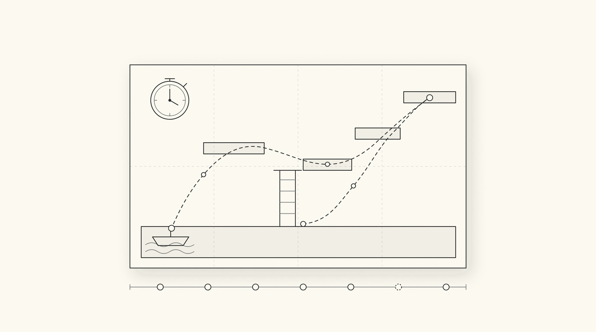

254 ACW Speedrun Toolkit
Reverse engineering · TelemetrySomeone else's game jam entry, taken apart to find out how fast it could actually be finished.

254 ACW is a GMTK Game Jam 2026 platformer where every life lasts 60 seconds and the world persists between them. My first blind completion took about 30 minutes. Routing it properly with tools I built for the job got it to 1:46.49.
The game
Each run gives you 60 seconds before you die and the year advances. Levers you pull, boxes you push and items you carry all stay where you left them, so progress is made across lives rather than within one. Optimising it is a scheduling problem as much as a movement problem: what is worth doing in this life, given that the next one starts from scratch somewhere else.
The toolkit
I unpacked the shipped .pck and ran the recovered project natively in Godot, then added an autoload overlay alongside the original scripts. One call in the player's push loop is the only change to the game's own code; everything else observes from outside.
- Telemetry. Position, velocity, state, held item, keys, year and both timers, written every physics frame. A second file diffs the save's persistent dictionary each frame, so every lever, firepit and item pickup is captured without touching the game's scripts.
- Map rendering. The route maps are not screenshots. A Python pass walks the scene file and rebuilds every
CollisionShape2D, so the map is the real collision geometry, and the recorded path is drawn on top with one colour per life. - Collision overlay. All 222 shapes drawn live in game as translucent boxes, coloured by what owns them, with disabled shapes greyed out so save state is visible at a glance.
- Free camera. The camera detaches from the player without moving him, which makes it possible to check whether a route exists before spending lives finding out.
- Segment splits. Each checkpoint times a leg rather than a running total, so one bad segment doesn't poison every one after it. Per-leg bests save themselves the moment they're beaten. Deaths are their own checkpoints, so a slow death animation lands on its own row.
- Ghost. The best run replayed as a translucent figure, synced on the in-game clock rather than wall time so it survives menus, deaths and slow motion.
Reading the source
The route came out of the game's code more than out of practice. Three things mattered, and none of them are visible from playing:
- The scoring clock is only written to disk inside the death handler. One ending path skips it entirely, so an entire life can be erased from the final time.
- The death routine waits for the player to land before freezing him, and the wait exits on a velocity check that running never satisfies. That leaves a two-second window of full control after death, during which a carried item still moves with you and is saved where you end up.
- Interaction triggers are circles far larger than the objects that own them, which puts one pickup in reach from a ledge well below it.
I reported the clock bug to the developer, who confirmed it was unintended and is on his list to fix.
The result
The final route uses seven lives where an intuitive one uses five, because deaths are nearly free on the scoring clock and buying a year is cheaper than walking. Two lives are literally spawn-and-die. The telemetry is what made that legible: comparing two runs leg by leg showed that 6.5 seconds saved inside a timer-capped life turned into 19 seconds saved in the next life, because the item got parked further along and the following life pays for the trip out and back.
Built with
GDScript for the in-game overlay, telemetry, splits and ghost. Python for scene parsing, map rendering, route drawing, run comparison, save-state management and a physics sandbox for checking jumps without playing them. ffmpeg for the run video.